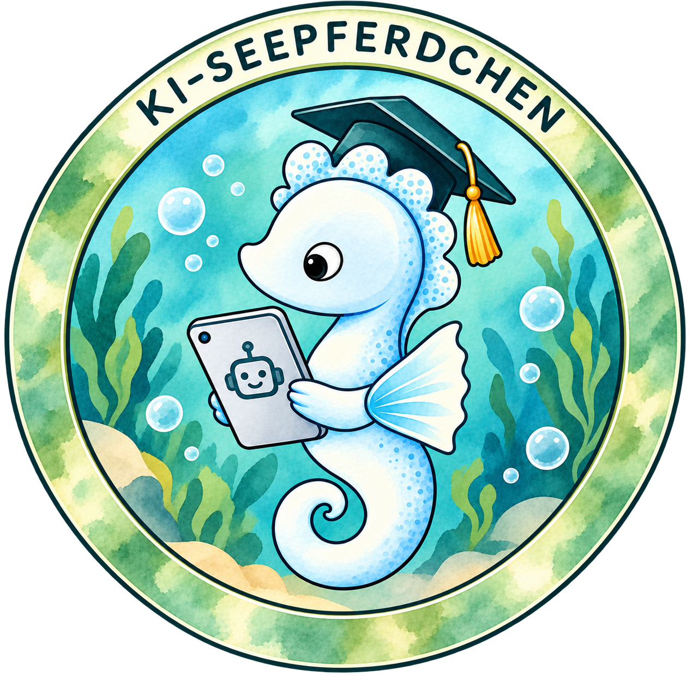

2007 begann ich mein Studium der Physik. Meine Neugier auf Technik und das Erschaffen neuer Dinge führte mich später in die IT. Seit 2020 bin ich in der Softwareentwicklung tätig.
Software · KI · Wissensvermittlung
Software und KI – verständlich, praxisnah und mit Haltung.
Ich baue Software, teile Wissen und unterstütze Menschen und Organisationen dabei, KI-Kompetenz verständlich und alltagsnah zu vermitteln – von der Entwicklung bis zur Bildung.

〈 / 〉 Software
Java, Spring Boot, saubere Architektur
☁ Cloud Native
Docker, Kubernetes, CI/CD
✳ Künstliche Intelligenz
Praxisnah, verständlich, mit Mehrwert
▤ Talks & Veröffentlichungen
Wissen teilen, Ideen weitergeben
♡ Tech Education
Engagement für eine vielfältige Tech-Welt
Aktuell im Fokus
Das KI-Seepferdchen
Du möchtest KI-Kompetenz vermitteln, Lernmaterialien vorbereiten oder Unterstützung bei der Vorbereitung und Durchführung des KI-Seepferdchens erhalten? Ich unterstütze dich mit durchdachten Konzepten und praxisnahen Materialien.
Mehr über das KI-Seepferdchen →
- Materialien vorbereiten Lerninhalte verständlich und zielgruppengerecht gestalten.
- Auf das KI-Seepferdchen vorbereiten Strukturierte Konzepte und praxisnahe Übungen entwickeln.
- Durchführung begleiten Bei Organisation, Ablauf und fachlicher Umsetzung unterstützen.
About
Hi, ich bin Jennifer
Ein paar Fakten über mich
Ich ♥ es zu coden, Software zu entwickeln und Ideen in funktionierende Lösungen zu verwandeln. Dabei beschäftige ich mich mit Softwarearchitektur, Infrastruktur und modernen Technologien.
KI ist für mich ein hilfreiches Werkzeug im Arbeitsalltag. Gleichzeitig hinterfrage ich kritisch ihre Auswirkungen, ihre Grenzen und ihren Ressourcenverbrauch 🌱.
Technologie ist nicht neutral – sie wird von Menschen gemacht. Deshalb beschäftige ich mich mit diskriminierungsfreier, feministischer KI und einem verantwortungsvollen Umgang mit Technologie.
Ich möchte Wissen vermitteln und für einen bewussten Umgang mit KI und Technologie sensibilisieren. Dafür engagiere ich mich unter anderem bei Women in Tech e.V. und der Hacker School.
Tech Stack
Solide Technik. Verständlich umgesetzt.
Technologien und Arbeitsweisen, die ich lieben gelernt habe ♥.
Talks & Research
Wissen teilen. Impulse setzen.
Ob auf der Bühne oder in wissenschaftlichen Veröffentlichungen – ich beschäftige mich mit Technologie, teile Erkenntnisse und möchte neue Perspektiven eröffnen.
404 – Women Not Found
Talk entdecken ↗Ein Kaugummi, Quantenmechanik und mein Weg in die IT – Warum ich heute mehr Frauen für Technologie begeistern möchte
Talk entdecken ↗Gedanken, die weiterwirken.
Meine wissenschaftlichen Veröffentlichungen und weitere Beiträge zu Forschung, Technologie und verwandten Themen findest du gesammelt auf ResearchGate.
Alle Veröffentlichungen ansehen ↗Engagement
Mehr Menschen für Tech begeistern.
Ich interessiere mich dafür, Wissen zugänglich zu machen, Perspektiven zu öffnen und eine vielfältige Tech-Welt mitzugestalten.
Hacker School
Als Tutorin begeistere ich Schüler:innen dafür, Technik nicht nur zu konsumieren, sondern selbst zu gestalten.
Women in Tech e. V.
Ich verkünde die frohe Botschaft einer vielfältigeren Tech-Welt.
Kontakt
Lass uns ins Gespräch kommen.
Du planst einen Talk, möchtest Materialien zum KI-Seepferdchen vorbereiten oder suchst fachlichen Austausch? Ich freue mich auf deine Nachricht.